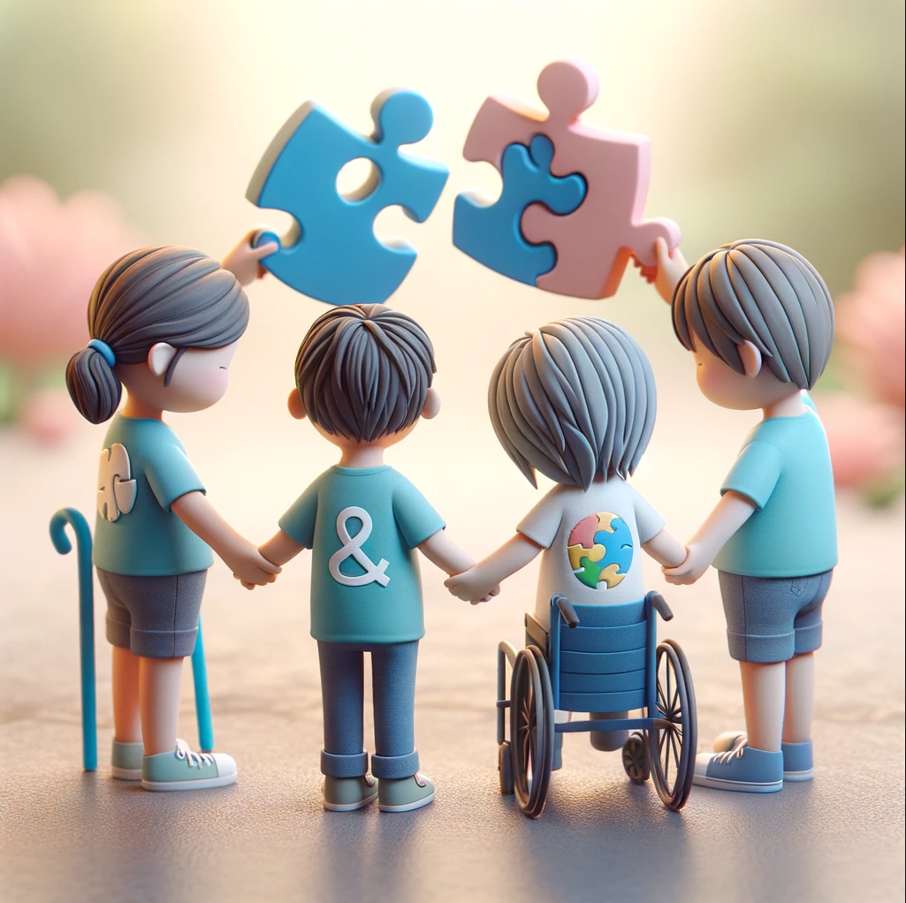
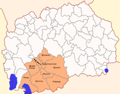
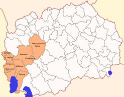

Основно училиште со Ресурсен Центар
Primary School with Resource Center
Shkolla Fillore me Qendër Burimore
"Кочо Рацин" - Битола
"Koco Racin" - Bitola
"Koço Racin" - Manastir
Инклузивно образование за сите
Inclusive education for all
Arsim gjithëpërfshirës për të gjithë

Кај нас, секое дете е посебно.
With us, every child is special.
Me ne, çdo fëmijë është i veçantë.
За нас
About Us
Rreth Nesh
Основно училиште со Ресурсен Центар "Кочо Рацин" - Битола го опфаќа југозападниот и пелагонискиот регион и нуди специјализирани услуги за ученици со попреченост.
Primary School with Resource Center "Koco Racin" - Bitola covers the southwestern and Pelagonia region and offers specialized services for students with disabilities.
Shkolla Fillore me Qendër Burimore "Koço Racin" - Manastir mbulon rajonin jugperëndimor dhe të Pelagonisë dhe ofron shërbime të specializuara për nxënësit me aftësi të kufizuara.

Пелагониски регион
Pelagonia Region
Rajoni i Pelagonisë

Југозападен регион
Southwestern Region
Rajoni Jugperëndimor
Локација
Location
Vendndodhja
Се наоѓа на влезот од градот, од левата страна, во близина на црквата Св. Недела
Located at the entrance of the city, on the left side, near St. Nedela church
Ndodhet në hyrje të qytetit, në anën e majtë, afër kishës së Shën Nedes
Поддршката што ја нуди ресурсниот центар при имплементирање на инклузивно образование
Support offered by the resource center in implementing inclusive education
Mbishkrimi i ofruar nga qendra e burimeve në zbatimin e arsimit gjithëpërfshirës
- Основно образование за ученици со попреченост
- Primary education for students with disabilities
- Arsimi fillor për nxënësit me aftësi të kufizuara
- Оддел за ран детски развој - индивидуална и групна рана интервенција
- Early childhood development department - individual and group early intervention
- Departamenti i zhvillimit të hershëm të fëmijëve - ndërhyrje e hershme individuale dhe në grup
- Бесплатен топол оброк и превоз
- Free hot meal and transportation
- Ushqim dhe transport falas
- Продолжен и дневен престој на ученици од I-IX одд
- Extended and daily stay for students from I-IX grade
- Qëndrim i zgjatur dhe ditë për nxënësit nga klasa I-IX
- Воннаставни активности
- Extracurricular activities
- Aktivitete jashtëshkollore
- Настава по модифицирана наставна програма за ученици од ООУ
- Teaching according to a modified curriculum for students with special needs
- Mësimdhënie sipas programit të ndryshuar për nxënësit me nevoja speciale
- Ученички дом за ученици со живеалиште надвор од градот/општината
- Student dormitory for students living outside the city/municipality
- Shtëpi e nxënësve për nxënësit që jetojnë jashtë qytetit/komunës
- Специјализирани услуги достапни за ученици со попреченост:
- Сензорна интеграција
- Психомоторна редукција
- Работа по методот на Марија Монтесори
- Ортооптички-плеоптички вежби, користење Брајова азбука, машина/компјутер, ориентација и мобилност во простор
- Логопедски третман
- Поддршка од психолог
- Поддршка од социјален работник
- Поддршка од специјален едукатор и рехабилитатор
- Биофидбек терапија
- Слушно-говорни вежби со аудиометрија, аугментативна и алтернативна комуникација
- Дактилологија и знаковен јазик
- Асистивна технологија
- Specialized services available for students with disabilities:
- Sensory integration
- Psychomotor reduction
- Work according to the Maria Montessori method
- Orthoptic-pleoptic exercises, use of Braille alphabet, machine/computer, orientation and mobility in space
- Logopedic treatment
- Support from a psychologist
- Support from a social worker
- Support from a special educator and rehabilitator
- Biofeedback therapy
- Auditory-verbal exercises with audiometry, augmentative and alternative communication
- Dactylography and sign language
- Assistive technology
- Shërbime të specializuara në dispozicion për nxënësit me aftësi të kufizuara:
- Integrimi sensorik
- Reduktim psikomotor
- Punë sipas metodës së Maria Montessori
- Ushtresat orto-optike, përdorimi i alfabetit të Brajlit, makinë/kompiuter, orientimi dhe lëvizja në hapësirë
- Trajtim logopedik
- Mbështetje nga një psikolog
- Mbështetje nga një punonjës social
- Mbështetje nga një edukator dhe rehabilitator special
- Terapi biofeedback
- Ushtresat dëgjimore-folëse me audiometri, komunikim shtesë dhe alternativ
- Daktilografia dhe gjuha e shenjave
- Teknologji ndihmëse
- Ресурсни специјални едукатори и рехабилитатори (членови на инклузивните тимови на основните училишта согласно Законот за основно образование) - стручна поддршка во редовните училишта
- Resource special educators and rehabilitators (members of the inclusive teams of primary schools according to the Law on Primary Education) - professional support in regular schools
- Edukatorë dhe rehabilitues specialë të burimeve (anëtarë të ekipeve gjithëpërfshirëse të shkollave fillore sipas Ligjit për Arsimin Fillor) - mbështetje profesionale në shkollat e rregullta